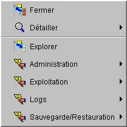

I-SIS Explorer

Guide d'utilisation
|
|
I-SIS Explorer |
|
|
Guide d'utilisation |
||
Les différentes méthodes présentées dans les chapitres précédents sont, pour la plupart, ajoutées automatiquement au menu contextuel du nœud par le I-SIS Explorer.
D'autres méthodes peuvent également apparaître dans les menus contextuels des nœuds de l'arbre d'exploration, en fonction des données transmises par le I-SIS Portail, un I-SIS Agent ou un mode d'emploi d'exploitation.
Ces méthodes, dites méthodes d'exploitation, sont définies dans des tables I-TOOLS (cf. le «Manuel de référence I-TOOLS») et associés à d'autres tables I-TOOLS, lesquelles correspondent aux nœuds sur lesquels apparaissent les menus contextuels.
Ces méthodes étant définies au niveau du I-SIS Portail, au niveau d'un I-SIS Agent, ou encore au niveau d'un mode d'emploi d'exploitation, leur liste ou leur fonctionnement peut évoluer indépendamment de I-SIS Explorer. Par conséquent, ce chapitre a pour objectif de présenter un certain nombre de sous-fenêtres qui peuvent résulter de l'exécution d'une méthode d'exploitation.
Les méthodes sont souvent rassemblée selon un regroupement logique, fonctionnel, ou selon une responsabilité I-SIS. Graphiquement, dans les menus contextuels, les méthodes sont regroupées en sous-menus.
Ce regroupement est définit au niveau de la table des méthodes fournissant la liste des méthodes du nœud concerné.
Dans l'exemple ci-dessous, un certain nombre de méthodes d'administration ont été placées dans un groupe "Administration", d'autres méthodes, plus orientées exploitation, ont été placées dans un groupe "Exploitation", etc.

Copyright © 2003 BV Associates. Tous droits réservés.